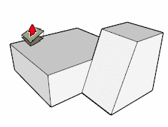

Align Face Tool
- Align face to given plane.
Tool Operation
- Click face to align.
- Click plane to align to, or enter distance to offset face's current plane.
- Double click to repeat previously made offset.
Modifier Keys
- Shift = Lock to current orientation.
- Shift (When double clicking) = reverse direction.
Learn more...